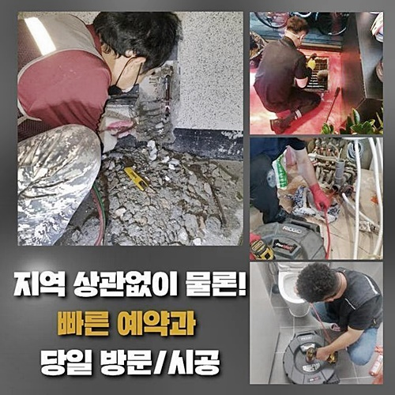
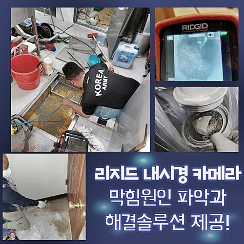
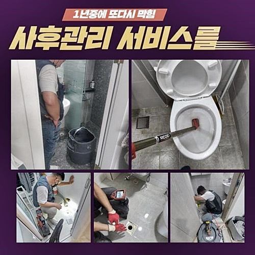
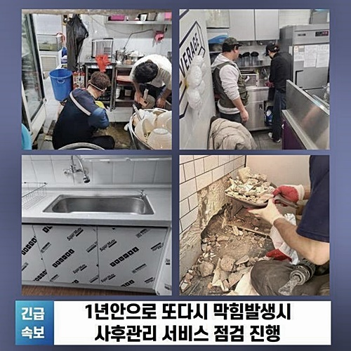
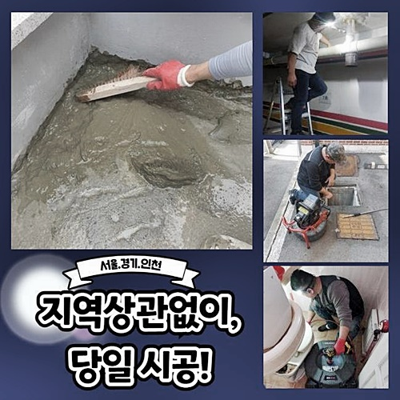
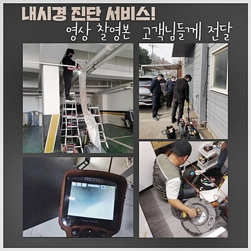
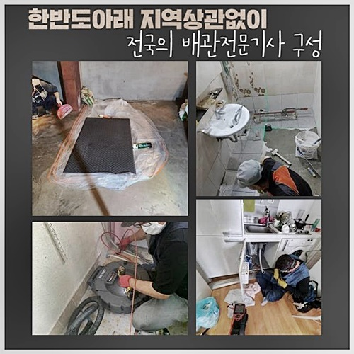

🏠 도봉 쌍문동세탁실역류 도봉동 하수구뚫는업체 설비하는곳
용인시 처인구 배관막힘 전문 시공 후기

📋 작업 개요
- 위치: 용인시 처인구, 수원시 영통구, 화성시 동탄
- 서비스 유형: 배관막힘, 누수수리, 고압세척, 내시경점검
- 작업 일시:
- 업체명: 하수구수사대 (010-5615-2118)
🔍 문제 상황
도봉 쌍문동세탁실역류 도봉동 하수구뚫는업체 설비하는곳
저번주엔 구형주거지에 계신 의뢰자께서 배관고장으로 생긴 다양한 말썽으로 전화해 주셨는데요
구축 공동주택이었고 생각지도 않게 상황전개가 되어 당황스러운 사태가었답니다
역류증세마저 일어났다는 건 슬러지 고착화가 심각한 상황까지 전개되었다는걸 뜻하죠
저희팀은 출장을 전후하여 다양한 변수들을 검열합니다
연식이 20년 이상된 거주지는 관로의 재료나 시스템이 역류나 막힘 등에 약한 특성을 가지며 경우에 따라선 중앙에 설비되어 있는 경우도 있죠
위와 같은 세세한 모양새를 파악하면 저희측이 예비할 기계들도 바뀔수가 있습니다
그렇기 때문에 뚫음을 시행하기 전엔 필히 구조적인 문제들을 스터디하여야 해요
고압세척기는 거센 파워를 일으키기에 관로의 내구력이 부족하다면 찢어질수도 있답니다
그렇기 때문에 고압청소가 필요하다면 구간별로 세밀하게 조정된 세기를 부여하는 세세한 과정이 요구돼요
고압노즐에 연유한 피해는 누수 등의 정황을 유발할수 있어서 배관기술자의 점검을 이행받으시는게 합당합니다
다양한 장비구성이나 경험이 결여된 일반인이 이것을 감당하기는 정말 힘겹습니다
공사비를 검약하다가 파이프에 금이라도 간다면 전면적인 교환공사를 하는 형국이 발현될수 있답니다

🔎 원인 분석
💡 전문가 진단: 정밀 진단 장비를 사용하여 슬러지의 고착 여부를 판명하고 타격/세척 작업을 실시했습니다.
그러니 가벼운 조치들만 한다음 처치가 곤란하시다면 배관기술자를 찾아보시는 것이 금전 부담을 줄이는 지름길입니다
금번 다녀온 지점은 구형의 주택단지라 배관점검에 더더욱 힘겨운 측면이 있었어요
막힘을 방관해버리면 곰팡이가 피거나 고약한 내가 퍼지는 수많은 불이익이 나타날수 있으므로 적시에 처리하는 대응이 요망되었죠
고압의 물청소는 파이프의 깊은 지점까지 깔끔하게 노폐물들을 소멸시키는 특성을 갖죠
일부분은 고착물의 분쇄기계를 써서 강력하게 접착된 물질을 떼어낸 다음에 고압 물세척 과정을 시행할때도 있어요
장기간 적체된 찌꺼기들은 고압청소로도 잔류하기도 하는데 플렉스 샤프트 기계를 적절히 활용하면 상황이 손쉽게 처치될수도 있는것이죠
이런 과정들을 토대로 배수길을 확보하고 통수고장 등을 차단할수 있답니다
이러한 사안들은 배수 시스템을 지키는 데에 대단히 중대한 노릇을 한다고 설명드릴 수 있고 계속적으로 해나가는게 바람직합니다
금번에 들어간 곳은 평소 관리에 신경을 안쓰셔서 고장이 나타난 상황이라 향후에 나타날 가망이 높은 관막힘 증상을 막아내기 위하여 주기적인 관리방안과 응급시 대응방안을 설명해 드렸어요
배관 막힘은 기본적인 삶을 곤란하게 몰아갈수 있으며 좀더 진행되면 물유출 현상으로 인하여 위생적으로도 위협이 될수 있어요
그것은 결론적으로 삶속의 편익을 하락시키죠
이렇기에 관로막힘이 나타나면 정밀하고 숙련성있는 손길이 요청되죠
찌꺼기들은 배수관 전체에 누증되었거나 하수관 벽에 눌어붙어 상존할수도 있어요

🔧 작업 과정
욕실 배관은 각종 일회용도구들과 보습티슈가 주를 이루고 주방은 생선뼈나 비닐 등이 많다고 볼수 있죠
통상적으로 고속 물세정 과정은 대단히 보탬이 많이 됩니다
고속 물세정은 공동 배수파이프나 야외에 위치한 오수관에서부터 고속의 물세척을 활용하여 관로내부를 소제하는 과정이랍니다
이물이 쌓인 배관을 뚫기 위하여 고수압 세정방식은 필수라고 말씀드립니다
우리와 같은 전문가들을 만나시면 소제작업을 한층 능률적으로 받아보실 수 있답니다
관련지식이 불충분한 사람이 오게된다면 점검 업무시에 고장을 똑바로 헤아리기 힘들수있고 시공 성과가 허술해지게 되는거죠
저희측은 해당하는 업무경험이 많기에 형편을 제대로 살피고 올바른 행동을 이행할수 있죠
업무를 하는 와중에 장기간 정비를 하지 않아 고객 세대뿐이 아닌 공동배수관과 아래세대에까지 피해상황이 전파되어 있었습니다
개략적인 검열과 클리닝이 불가피한 형국이었습니다
만에 하나 수선이 지속해서 미루어지면 피해복구와 분쟁과 같은 예상치못한 말썽들도 발현될수 있다는걸 알립니다
관로에 누적된 슬러지에 의한 막힘으로 판단하였고 내시경기기를 활용하여 전체적인 조사를 해나갔습니다
내시경장비는 배관의 내부를 샅샅이 탐지해내고 어떠어떠한 대책을 적용할지 선택할수 있도록 돕죠
촬영기기가 갖추어지지 않았다면 작업자의 손감각에만 의존하는 문제가 생겨 정밀함이 낮아지게 되죠
브라운관으로 고형물들이 어느영역에 집중되어 있고 시스템은 어떠한지에 대해서 조사해야 적절한 수리라고 칭할수 있는거죠
배관전용 내시경을 통해 들여다보니 공용관로에 여러가지 잔재들이 공처럼 고정돼 있다는걸 알아낼수가 있었답니다
관로곳곳에 침윤된 석회성분은 일반 물청소로는 소멸시키기 까다롭고 플렉스플렉스샤프트기계라는 전문 장비가 요청되죠
일단 파이프 구조를 검사하고 잔재들이 쌓인 영역을 특정한 뒤에 플렉스샤프트를 작동하여 막힘증세를 해결했답니다
해당 공정에선 배관안에 부유하는 이물들을 처리하고 배수관을 청소하는 작업이 진행됐는데 중간에 흡입기를 가동시켜서 관이 순조롭게 사용되도록 조치하였죠
배관막힘은 한번이라도 나타났다면 누수나 역류까지 촉발시킬수 있어서 발빠른 진단이 요구돼요
본 현장의 경우엔 여러층에서 연쇄적으로 나타났으므로 시공량이 확장될수 있었다는 부분에서 신경이 많이 쓰였는데요


✅ 작업 완료
그렇기에 날짜에 얽매이지 말고 바로 수선을 해나가시는게 합리적입니다
우리팀은 주말이나 이른 아침이라도 손님께서 도움을 요청하시면 즉시 방문할 채비가 마련돼 있어요
사태가 급박하시다면 머뭇거리시지 말고 저희들에게 전화주십시오
해당 처소에선 심한 냄새가 올라오는 사태를 진단해보았고 배수 흐름과 역류에 대한 부분까지 꼼꼼하게 알아보았는데요
혹시라도 뚫음에 완수를 해내지 못하였을 시 작업시공비를 요구하지 않고 의뢰인의 과오가 없다는 가정하에서는 비용 청구없이 애프터서비스를 받아보실수도 있어요
믿음직한 태도를 근간으로 문의자께 만족감을 올려드리도록 할게요




⚠️ 하수구 배관 막힘 예방 및 관리 가이드
- ✅ 머리카락, 비닐, 물티슈 등 물에 분해되지 않는 이물질은 절대 흘려보내지 마세요.
- ✅ 기름기 많은 식기는 설거지 전 키친타올로 먼저 기름때를 닦아내세요.
- ✅ 주기적으로 배수구에 뜨거운 물을 가득 부어주어 유지방 고착을 방지하세요.
- ✅ 작업 후 1년 이내 재발 시 무상 A/S 보증 서비스를 제공합니다.
💡 핵심 정리
- 확실한 장비 작업(내시경 점검 및 샤프트 스케일링)으로 원인을 뿌리 뽑습니다.
- 작업 후 1년 이내에 동일한 부위 재발 시 100% 무상 A/S 서비스를 보장합니다.
- 서울 · 경기 · 인천 전 지역에 24시간 언제든 긴급 출동할 수 있도록 항시 대기 중입니다.
❓ 자주 묻는 질문 (FAQ)
🚨 용인시 처인구 배관막힘 문제로 고민이신가요?
정확한 원인 진단과 확실한 시공으로 재발 없는 해결을 약속드립니다.
24시간 긴급 출동 | 서울 · 경기 · 인천 전지역 | 1년 내 재발 시 무상 A/S